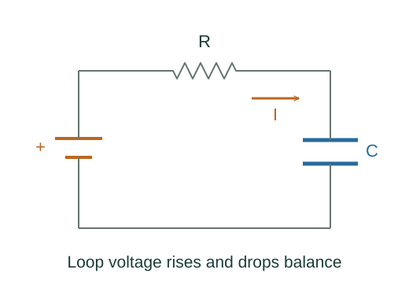

Derive exponential charging of an RC circuit
As a capacitor charges, its increasing voltage leaves less source voltage across the resistor. That feedback makes the current and the remaining charge deficit decay exponentially.
What the symbols mean
R: series resistance; C: capacitance; ℰ: ideal constant emf; q: capacitor charge magnitude; τ = RC: time constant.
When this applies
Ideal series resistor and capacitor, a suddenly connected DC source, initially uncharged capacitor, constant R and C.
Developing the argument

Apply the loop rule
The source rise equals resistor drop plus capacitor drop. Current is the rate at which charge accumulates on the plate.
A closer lookWhy must circuit voltage changes balance? ↗Write the differential equation
Rearrange so the rate is proportional to the deficit between q and its final value Cℰ.
Separate and integrate
Let u = Cℰ − q. Its derivative is −u/(RC), whose logarithmic integral gives an exponential. Initial charge zero makes u(0) = Cℰ.
Differentiate to get current
The derivative decays from ℰ/R to zero. The capacitor voltage approaches ℰ, so the final resistor drop vanishes.
A worked example
With R = 1000 Ω and C = 100 μF, τ = 0.10 s. At t = τ the capacitor has reached 1 − e⁻¹ ≈ 63.2% of its final charge.
Derivation behind this calculation ↗A point to keep straight
The capacitor does not instantly reach full charge. Its initial charging current is nonzero, while its initial voltage is zero in this setup.
Check the assumptions and derivation ↗